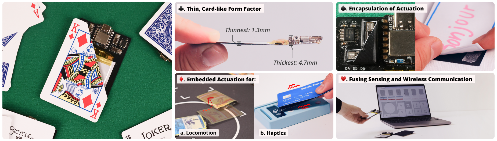

Aditya Retnanto*, Emilie Faracci*, Anup Sathya*, Yu-Kai (Kain) Hung, Ken Nakagaki
University of Chicago & National Taiwan University · UIST '24, Pittsburgh, PA · *equal contribution

CARDinality is a new approach to interactive robots that borrows the form factor of a playing card. Each robot is a thin, flat device that uses vibration both to slide across a surface in any direction and to give haptic feedback. With on-device sensing and wireless control, the robots are light, portable, and scalable, and they open up tangible interactions for card games, learning tools, and everyday objects.
My contributions: fabrication (3D printing and soldering), locomotion training, the sensing pipeline and algorithms, Bluetooth networking, and experiment design.
Turning four motor intensities into a direction of travel is hard to model, so each robot learns its own motion patterns. In a camera-tracked "robot school" arena with ArUco markers, a grid search runs 625 motor-intensity combinations and measures the resulting motion. The best patterns cover 36 headings at 10° steps, plus clockwise and counter-clockwise rotation. All 76 patterns are stored in firmware, so a single 1-byte BLE command can trigger any of them.
A Flask-based control interface handles omni-directional driving, haptic presets, and camera-based closed-loop targeting. One laptop has run up to 10 robots at the same time.
Motion patterns depend on the individual device and the surface. A model transferred from one robot to another performs poorly, and sleeves or textured bases call for retraining. Next steps include onboard localization in place of the external camera, thinner replacements for the rigid components that cover about 22% of the board, and patterns that generalize across devices and surfaces.